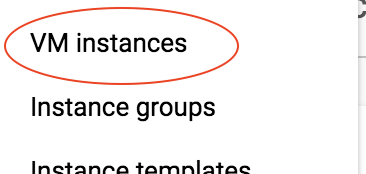
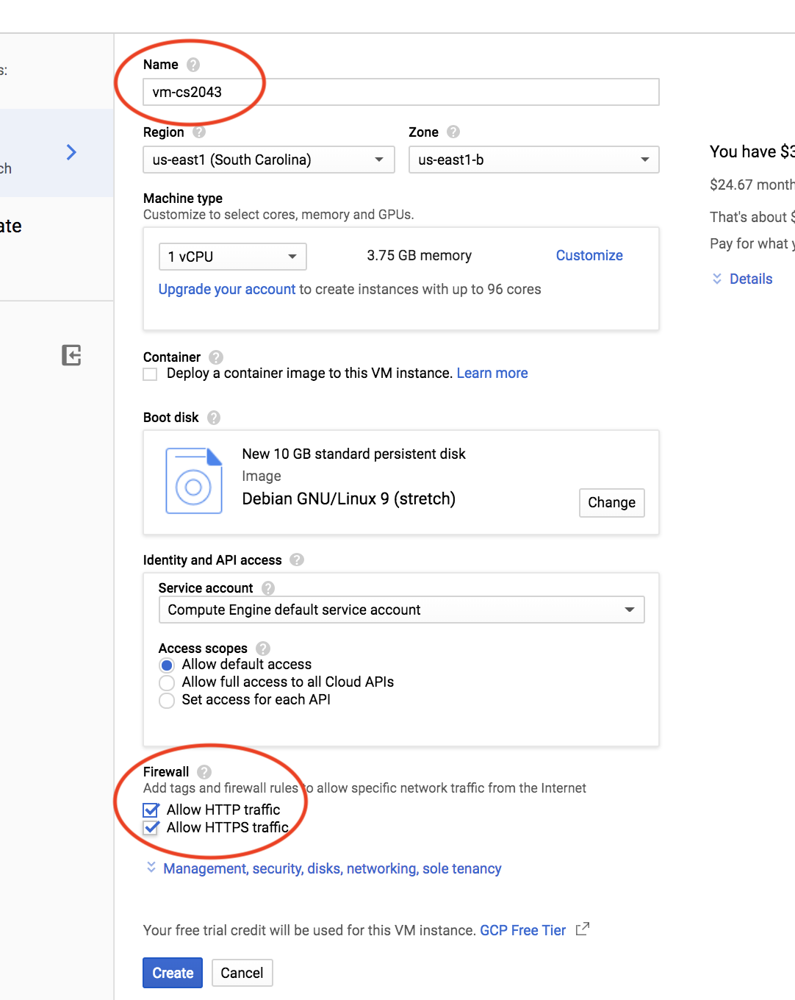
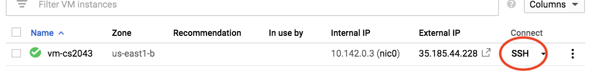
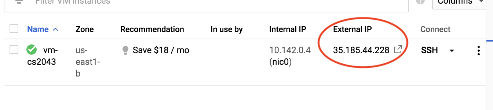
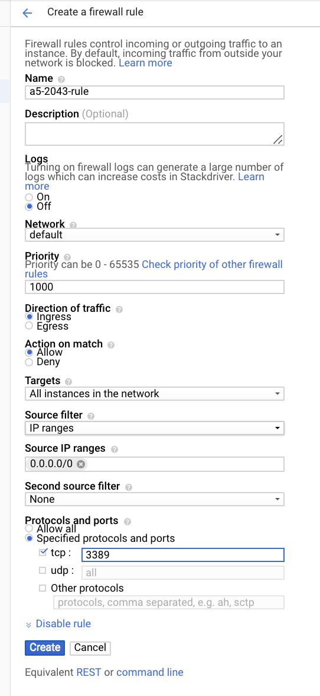

Older assignments
CS 2043 Assignment 5: Create a Google Cloud VM
Due Date: Monday March 4 at 11:15 am
Assignment Captain: Ted Bauer
In this assignment, you’ll launch a virtual machine on one of Google’s fancy computers, and then you’ll communicate with it from Wash using some networking commands. In Assignment 6, you’ll build off of this setup, so make sure you follow the instructions carefully!
Part 1: set up a VM on Google Cloud.
- Navigate to https://console.cloud.google.com, and login with your Cornell Google account. The screen you’ll see is a general hub where you can manage the Google Cloud projects you’re working on.
- In the sidebar on the left, click the button that says “Compute Engine”, which should bring up another menu; click “VM instances.” (See Figure 1.)
- You’ll likely need to set up a free trial for Google Cloud at this point. You can sign up for a free trial that will last a year, and provide you with $300 of credit (this will fund the computers that run your VMs). After A6 (the next assignment), you’ll probably want to cancel the trial so you don’t forget about it and get billed! We’ll remind you at the end of this writeup, and also at the end of A6.
- Next, click “Create Instance”.
- You should now be on a screen with details about your VM instance. You can name this instance anything you like. Check the boxes that say “Allow HTTP traffic” and “Allow HTTPS traffic”. This is important for Assignment 6, so don’t forget this! You can leave everything else as-is. (See Figure 2.)
- Click “Create” and you’ll be brought to a table of your active VMs. It might take a few seconds for your VM to start up, but once it does, you’ll have your very own VM running on Google’s servers.

Figure 1

Figure 2
Part 2: connect to your VM
In the table of your active VMs, under the “Connect” column, click “SSH” (See Figure 3). A window should appear that looks like a computer terminal. You can use this terminal to interact with your VM.

Figure 3
Part 3: install networking commands.
We’ll need to install a couple of commands on your VM that are often available pre-installed on many Unix systems. They’re called ifconfig and netcat; install them by typing sudo apt-get install net-tools and sudo apt-get install netcat into the web-terminal. (Type ‘Y’ for ‘Yes’ when prompted.)
Part 4: find the IP address of your VM.
You can find the IP address of your VM by navigating to the list of your VM instances, and finding the entry under “External IP”. See Figure 4:

Figure 4
Part 5: modify the firewall for your VM.
In order to communicate between Wash and the VM, we’ll need to open a port on the VM. For this assignment, we’re going to open port 3389. On the Google Cloud Platform, you can do this by following these steps:
- In the sidebar, under the “Networking” section, navigate to VPC network -> Firewall rules.
- Click “Create Firewall Rule.”
- Make sure the settings look something like this (see Figure 5):
- Set “Name” to something like “a5-rule.”
- Set “Network” to “default”.
- Set “Direction” to “Ingress”.
- Set “Targets” to “All instances in the network”.
- Set “Source filter” to “IP ranges”.
- Set “Source IP ranges” to “0.0.0.0/0”.
- Under “Protocols and ports”, check “tcp” and specify the port to be 3389.

Figure 5
Part 6: wait for a connection on the VM.
For this part of the assignment, you’ll set up the VM to listen for a connection from Wash. You’ll send the output of running ifconfig to Wash; to receive credit for the assignment, make sure you follow this step carefully! In the web-terminal for your Google VM, pipe the output of sudo ifconfig to netcat -p 3389 -l -q 0. This will make your VM listen for connections on port 3389, and will send the output of sudo ifconfig to devices that connect. (The -q 0 makes it a bit easier to end the netcat connection when you do step 7, but it’s not important; don’t worry about it.)
Part 7: turn in your assignment with check-vm!
Now, you’ll receive the VM’s output of sudo ifconfig on Wash, and turn it in! We’ve provided you with a command check-vm. It will connect to your VM (which should be waiting for such a connection if you followed step 5) and turn in the output. Invoke it by typing check-vm hostname port, where hostname is the IP address you found in step (4), and port is 3389.
- If you run the command and it outputs “check-vm succeeded! You’ve successfully turned in A5.”,you’re done! Good work.
- Otherwise, you’ll see “check-vm failed: could not communicate with VM. Please troubleshoot.”, or something similar. You’ll need to do some troubleshooting. Make sure you followed all of the steps carefully! You can run check-vm as many times as you want, but each time you’ll need to do step (6) again: the VM needs to be listening for connections.
Part 8: remember to eventually cancel your free trial!
Don’t forget: after you finish the assignment after this one (i.e. after you finish A6), cancel your free trial so you don’t get billed!